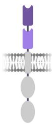
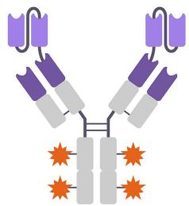
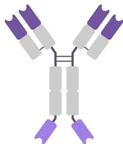
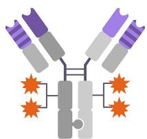
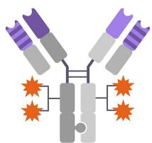
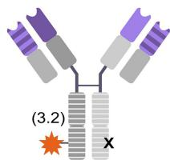
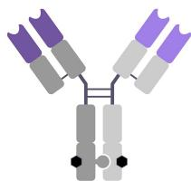
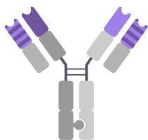

Biparatopic antibodies: therapeutic applications and prospects
David L. Niquille, Kyle M. Fitzgerald & Nimish Gera (2024) Biparatopic antibodies: therapeutic applications and prospects, mAbs, 16:1, 2310890, DOI: 10.1080/19420862.2024.2310890
ABSTRACT
Biparatopic antibodies (bpAbs) bind distinct, non-overlapping epitopes on an antigen. This unique binding mode enables new mechanisms of action beyond monospecific and bispecific antibodies (bsAbs) that can make bpAbs effective therapeutics for various indications, including oncology and infectious diseases. Biparatopic binding can lead to superior affinity and specificity, promote antagonism, lock target conformation, and result in higher-order target clustering. Such antibody-target complexes can elicit strong agonism, increase immune effector function, or result in rapid target downregulation and lysosomal trafficking. These are not only attractive properties for therapeutic antibodies but are increasingly being explored for other modalities such as antibody-drug conjugates, T-cell engagers and chimeric antigen receptors. Recent advances in bpAb engineering have enabled the construction of ever more sophisticated formats that are starting to show promise in the clinic.
KEYWORDS
Antibody engineering; antibody-drug conjugates; biparatopic antibodies; bispecific antibodies; chimeric antigen receptors; infectious disease; oncology; T-cell engagers
Introduction
Antibody therapies accounted for \(3 [@0] \%\) of the novel drug approvals in the US in 2022 (n.d.a). Of the antibodies in development, a marked increase in the number of highly engineered molecules, including bispecific antibodies (bsAbs), has been observed (n.d.b). Biparatopic antibodies (bpAbs) are a subset of bsAbs having specificity for unique, non-overlapping epitopes on the same molecular target. This unique binding mode, established more than 30 years ago, enables differentiated mechanisms of action (MoAs)(n.d.c). Over the past decade, the therapeutic potential of bpAbs has become evident with the first successes in clinical trials. These pioneering molecules have paved the way for an increasing number of bpAbs in clinical development today (Table 1). This review provides an overview of the diverse formats and MoAs, the current clinical pipeline, and prospects of bpAbs.
Biparatopic formats
Advances in antibody discovery and engineering enable increasingly sophisticated bpAb formats that assemble binding domains against distinct epitopes in diverse architectures. The choice of format depends on the target biology and proposed MoA. Critical design considerations include the targeted epitopes, the number and nature of individual binding domains, the addition of half-life extension and effector functionmediating domains, and the strategy to ensure correct assembly of all domains into a functional bpAb. The latter can be as simple as concatenating individual domains with flexible linkers in a single protein or, in crystallizable fragment (Fc) domain containing bpAbs, depend on the correct pairing of up to four distinct proteins with corresponding steering
mutations in the heavy chains (HCs) and light chains (LCs), respectively. Productive epitope pairs are hard to predict rationally or with antibody mixtures. Therefore, the ability to efficiently generate and screen large matrices of epitope pairs in a given bpAb format is key (n.d.d). Beyond functionality and feasibility, developability considerations are crucial when selecting a bpAb format. Testing for biophysical liabilities of bpAbs early on can mitigate the risk of failure in animal studies and clinical trials (n.d.e). Similarly, the choice of bpAb format can affect downstream manufacturing and quality control due to poor developability or mispaired side products that may result from bpAb format complexity (n.d.f).
The bpAbs tested in the clinic to date not only feature diverse formats, but also draw on a large diversity of individual binding domains (Figure 1). Single-chain antibody formats, such as single-domain antibodies (sdAbs) and single-chain variable fragments (scFvs) in particular, are readily paired in biparatopic formats. Accordingly, the two first bpAbs to enter the clinic, \(\mathrm { A L X } – 0 [@6] [@5; @1] ^ { 7 }\) and BI 1034020 (n.d.g) consist of tandem sdAbs. Antibody fragment-based bpAbs typically exhibit a short half-life in circulation and require further engineering to improve exposure. The small size makes sdAbs ideal building blocks for chimeric antigen receptors (CARs), as highlighted by the biparatopic CAR-T therapies ciltacabtagene autoleucel (cilta-cel)(n.d.h) and OriCAR-017 (n.d.i)
The majority of bpAbs tested in the clinic to date have a more canonical, Fc-containing architecture that can be classified by the symmetry across the HC axis (Figure 1). Symmetric bpAbs consist of identical HC or HC/LC pairs while asymmetric molecules consist of disparate halves with different binding domains. The tetravalent molecules MEDI4276 and BAT2022 are examples of symmetric bpAbs
| Molecule | Target | Valency | Format | MoA of bpAb | Development Stage | Sponsor |
|---|---|---|---|---|---|---|
| ALX-0651 | CXCR4 | 1 + 1 | Tandem sdAb | Inverse agonism | Discontinued | Ablynx |
| BI 1034020 | AB | 1 + 1 | Tandem sdAb | Clearance of free target | Discontinued | Boehringer Ingelheim |
| MEDI4276 | HER2 | 2 + 2 | Symmetric scFv-Fab ADC | Receptor clustering, internalization | Discontinued | MedImmune |
| ciltacabatagene autoleucel | BCMA | 1 + 1 | Tandem sdAb CAR-T | Affinity | Approved | Johnson & Innovative Medicine |
| zanidatamab | HER2 | 1 + 1 | Asymmetric scFv-Fab | Receptor clustering, internalization, effector function | Phase (n.d.c) | Jazz Pharmaceuticals |
| MP0274 | HER2 | 1 + 1 | DARPin | Receptor clustering | Discontinued | Molecular Partners |
| anbenitamab | HER2 | 1 + 1 | Asymmetric hetero HC, common LC | Receptor clustering, effector function | Phase (n.d.c) | Alphamab Oncology |
| BCD-147 | HER2 | 1 + 1 | Asymmetric scFv-Fab | Undisclosed | Discontinued | Biocad |
| MBS301 | HER2 | 1 + 1 | Asymmetric hetero Fab | Effector function | Phase (n.d.a) | Beijing Mabworks |
| SAR441236 | HIV | 1 + 1 + 1 | Asymmetric CODV-Ig-Fab | Prevention of mutational escape | Phase (n.d.a) | Sanofi |
| zanidatamab-zovodotin | HER2 | 1 + 1 | Asymmetric scFv-Fab ADC | Receptor clustering, internalization, effector function | Phase (n.d.a) | Zymeworks |
| GEN3009 | CD37 | 1 + 1 | Asymmetric hetero Fab | Receptor clustering, effector function | Discontinued | Genmab |
| REGN5093 | MET | 1 + 1 | Asymmetric hetero HC, common LC | Receptor clustering, internalization | Phase (n.d.a) | Regeneron |
| REGN5093-M114 | MET | 1 + 1 | Asymmetric hetero HC, common LC ADC | Receptor clustering, internalization | Phase (n.d.a) | Regeneron |
| OriCAR-017 | GPRC5D | 1 + 1 | Tandem sdAb CAR-T | Affinity | Phase (n.d.a) | OriCell Therapeutics |
| KM257 | HER2 | 1 + 1 | Asymmetric hetero HC, common LC | Undisclosed | Phae (n.d.a) | Xuanzhu Biopharm |
| TQB2930 | HER2 | 1 + 1 | Asymmetric scFv-Fab | Undisclosed | Phase (n.d.a) | Chia Tai Tianqing Pharmaceutical |
| BAT2022 | SARS-CoV-2 | 2 + 2 | Symmetric IgG-sdAb | Prevention of mutational escape | Discontinued | Bio-Thera Solutions |
| ISB1442 | CD38 x CD47 | 1 + 1 + 1 | Asymmetric tandem Fab-Fab | Affinity | Phase (n.d.a) | Ichnos Sciences |
| JSKN003 | HER2 | 1 + 1 | Asymmetric hetero HC, common LC ADC | Receptor clustering, effector function | Phase (n.d.a) | Alphamab Oncology |
| TNB-738 | CD38 | 1 + 1 | Asymmetric sdAb-Fab | Enzyme inhibition | Phase (n.d.a) | Ancora Biotech |
| IMGN151 | FRα | 1 + 1 | Asymmetric scFv-Fab ADC | Binding stoichiometry | Phase (n.d.a) | Immunogen |
| KM501 | HER2 | 1 + 1 | Asymmetric hetero HC, common LC ADC | Undisclosed | Phase (n.d.a) | Xuanzhu Biopharm |
| TAVO412 | EGFR x VEGF x MET | 1 + 1 + 1 + 1 | Asymmetric tandem sdAb-Fab | Undisclosed | Phase (n.d.a) | Tavotek Biotherapeutics |
| GR2002 | TSLP | 1 + 1 | Asymmetric hetero HC, common LC | Dual blocking | Phase (n.d.a) | Genrix Biopharmaceutical |
| TQB2102 | HER2 | 1 + 1 | Asymmetric scFv-Fab ADC | Undisclosed | Phase (n.d.a) | Chia Tai Tianqing Pharmaceutical |
| KN060 | Factor XI | 2 + 2 | Symmetric tandem sdAb | Enzyme inhibition | Phase (n.d.a) | Alphamab Oncology |

ALX-0651 
BI 1034020 
cilta-cel
OriCAR-017

MEDI4276 
BAT2022 
KN060
 

JSKN003
KM501* 
REGN5093

REGN5093-M114 
GEN3009
MBS301# 
anbenitamab
KM257
GR2002

ISB 1442 
SAR441236
zanidatamab
TQB2930
BCD-147

zanidatamab
zovodotin
IMGN151*
TQB2102*
TNB-738 
MP0274
half-life extension
ProA modulation
cytotoxic payload

hexamerization
bpAb architectures evaluated in clinical trials. Striped domains represent common light chain VLs or IgG4 Fcs. REGN5093-M114 contains an average of (n.d.c).2 non-specifically conjugated drugs per antibody. # MBS301 does not contain hexamerization enhancing mutations; *Drug to antibody ratios and conjugation sites differ from the shown example.
with \(2 + 2\) valency (each integer describes the number of identical paratopes present in the molecule) and scFvs or sdAbs appended to the N- or C-terminus of the HC, respectively (n.d.j).,12 KN060, on the other hand, is a symmetric bpAb with tandem sdAb arms and no LCs (n.d.k). Analogous to KN060, trispecific TAVO412 achieves biparatopic targeting with a tandem sdAb arm that is embedded in a more complex asymmetric format (n.d.l). Asymmetric bpAbs typically rely on Fc mutations to either facilitate purification of the bpAb product or guide heterodimer formation. The two HCs of REGN5093, for example, are engineered to exhibit different affinity for protein A and allow
purification of the heterodimer product (n.d.m).,16 GEN3009 on the other hand, is an asymmetric bpAb with Fc domain steering mutations that ensure the correct pairing of the two distinct HCs (n.d.n). In addition to HC heterodimerization, correct LC pairing can be a challenge for asymmetric bpAbs. In the example of GEN3009, correct pairing is achieved via a mild in vitro reaction from two parent antibodies that allows HC recombination without scrambling of the original LC pairing. An alternative strategy that avoids the LC pairing problem altogether is illustrated by REGN5093, which consists of two disparate HCs paired with two identical LCs. Such common


LCs can be derived directly from discovery platforms with defined LC diversity as in the example of REGN5093, or engineered from existing LCs as in anbenitamab and GR2002 (n.d.o).–20 ISB \([@1; @4] [@4; @2] ^ { [@2; @1] }\) and \(\mathrm { S A R } [@4; @4] [@1; @2] [@3; @6] ^ { [@2; @2] }\) are examples of asymmetric bpAbs that expand the immunoglobulin G (IgG) architecture with additional Fab or scFv domains, respectively, to achieve higher valency and even triparatopic binding in the case of SAR441236. Smaller asymmetric formats such as the fragment-Fab-based zanidatamab (n.d.p) or the fragment–fragment-based TNB-73824 \([@7; @3] 8 ^ { [@2; @4] }\) can be exploited as well. Zanidatamab pairs an scFv domain with a full Fab arm while TNB-738 derives its binding arms from two sdAbs with an inert LC added for manufacturability. Beyond the immunoglobulin fold, a biparatopic designed ankyrin repeat protein (DARPin), MP0274, highlights the potential of alternative scaffolds (n.d.q). A comprehensive review of all bispecific formats is covered by Labrijn et al. 26.
MoAs of bpAbs
Biparatopic targeting enables enhanced binding through avidity
Binding to two distinct, non-overlapping epitopes on the same target results in unique properties of bpAbs compared to other antibodies. Many bpAbs show superior binding and slower dissociation from the target compared to their monoparatopic parent antibodies. This is a result of avid binding to two distinct epitopes either on the same (cis) or different (trans) target molecules (Figure 2 (a)). Avidity is defined as the combination of multiple noncovalent interactions by a single molecule and the associated increase in likelihood of binding and rebinding events once the first interaction is established (n.d.r). Antibody fragments targeting distinct epitopes can be linked to increase target affinity via avidity as highlighted by the
sdAb-based, clinically evaluated bpAbs ALX-0651 and BI 1034020 (n.d.s, n.d.g, n.d.t, n.d.u, n.d.v, n.d.w) Dissociation of bpAbs can be drastically slower compared to mono- or bivalent monoclonal antibodies (mAbs) making them superior antagonists (n.d.x) 33, or inverse agonists (n.d.s).,34 Cis binding to form a 1:1 bpAb target complex can be important for such applications to avoid unwanted agonist activity (n.d.y). In addition to epitope selection, geometrical arrangement of binding domains, sdAb linker optimization, and affinity tuning can be crucial to achieve the desired MoA and maximize efficacy. Kast and colleagues demonstrated that geometry of the binding domains was crucial for human epidermal growth factor receptor (n.d.b) (HER2) antagonism of biparatopic and tetravalent fusion proteins with certain configurations showing agonist activity (n.d.z). Similarly, different architectures of triparatopic anti-epidermal growth factor receptor (EGFR) IgG-fibronectin fusions showed varied efficacy in receptor downregulation (n.d.aa). For sdAb-based antagonists, optimal orientation and linker properties can enable ultra-high affinity by avid binding in cis (n.d.w).,38 Finally, the clinical bpAb ISB 1442 relies on careful tuning of the CD38 and CD47 affinities to reduce on-target toxicity. The anti-CD47 Fab of ISB 1442 has been engineered for weak affinity to achieve minimal reactivity with CD47-positive red blood cells. A high-affinity, biparatopic, anti-CD38 arm enables avid target engagement and high specificity on CD38-low tumor cells (n.d.ab).
The high affinity and slow dissociation of bpAbs is also attractive for recruitment of immune cells. For example, Liu and coworkers engineered a T cell engaging anti-HER2 bpAb by fusing two sdAbs targeting non-overlapping epitopes with an anti-CD3 Fab (n.d.ac). The resulting construct showed a 30-fold increase in binding on HER2-positive cells compared to the corresponding monoparatopic parent molecules and superior tumor suppression activity in vivo in a HER2-low expressing model. Similarly, Rennert et al. engineered a biparatopic bridging protein against C-type lectin domain family (n.d.ad) member A (CLEC12A) that is secreted by and recruits anti-CD19 CAR-T cells (n.d.ae). The high affinity enabled by biparatopic targeting resulted in increased anti-CD19 CAR-T cell cytotoxicity. Due to the small size of sdAbs, CARs can be equipped directly with bpAbs as highlighted by cilta-cel (n.d.h) and OriCAR-017 (n.d.i) The high affinity biparatopic binding of such CARs can result in enhanced and sustained efficacy (n.d.af). As discussed above for sdAb-based antagonists, careful selection of epitopes and linker optimization can be key.
bpAbs enable dual pathway inhibition and can lock the conformation of receptors and ectoenzymes
Binding to two non-overlapping epitopes can unlock unique activities for bpAbs. Dual-pathway inhibition, for example, was achieved with a bpAb-targeting low-density lipoprotein receptor-related protein (n.d.f) (LRP6) to simultaneously block both Wnt 1- and Wnt 3a-mediated \(\beta\) -catenin signaling pathways, notably without agonist activity (Figure 2 (b))(n.d.ag). Alternatively, bpAbs can inactivate their targets by physically constraining them. The crystal structure of a biparatopic anti-
HER2 DARPin targeting subdomains I and IV revealed binding and distortion of two HER2 receptors that prevented the formation of signaling-competent dimers with EGFR family members (n.d.ah). Furthermore, bpAbs against CD38 and CD73, including the clinical bpAb TNB-738, were shown to act as enzyme inhibitors by locking the respective extracellular domains in catalytically inactive states (Figure 2 (c))(n.d.ai).,44,45 Whereas individual parent antibodies did not show any activity, anti-CD73 bpAbs had sub-nanomolar activity and achieved \(> 9 [@0] \%\) inhibition (n.d.aj).
bpAbs can form immunocomplexes that result in agonism, rapid target internalization, lysosomal trafficking and improved immune effector function
A unique feature of bpAbs is their ability to form higher-order immunocomplexes by engaging two non-overlapping epitopes simultaneously in trans. Target crosslinking is the basis for multiple MoAs, including enhanced agonism, Fc-mediated effector function or clearance of soluble targets, and receptor downregulation.
Clustering by bpAbs can promote agonism, in particular for receptors that rely on cross-linking for efficient downstream signaling (Figure 2 (d)). Members of the tumor necrosis factor receptor superfamily (TNFRSF), for example, are important therapeutic targets due to their role in immune regulation and cell proliferation. TNFRSFtargeted mAbs typically rely on Fc receptor-mediated higher-order clustering, which has stymied their therapeutic application. Yang and coworkers have recently shown that tetravalent bpAbs against the TNFRSF members OX40 and death receptor (n.d.e) (DR5) achieve robust intrinsic agonism that is superior to extrinsically cross-linked parent mAbs, highlighting the potential of bpAb agonists (n.d.ak). BpAbs may also be uniquely positioned to activate multicomponent receptor complexes. For example, Shi et al. engineered a bpAb targeting two distinct epitopes of \(\beta .\) - klotho, the co-receptor of fibroblast growth receptor 1c (FGFR1c)(n.d.al). Biparatopic targeting was both necessary and sufficient to elicit potent agonism.
Receptor clustering by bpAbs increases the local concentration of Fc domains and can thereby lead to improved effector function (Figure 2 (e)). This effect has been observed with multivalent complexes targeted by mAbs, for example the B-cell marker CD20 targeted by the therapeutic mAb rituximab (n.d.am). Biparatopic binding by the antibody can extend this MoA to more targets. The formation of a large HER2 cluster by zanidatamab, for example, was shown to result in more potent complement-dependent cytotoxicity (CDC) compared to a combination of the parent mAbs due to Fc domain preorganization and the resulting increase in C (n.d.a)q deposition (n.d.p). This effect was further amplified for the anti-CD37 bpAb GEN3009 by introduction of a hexamerization enhancing point mutation in the Fc domain (n.d.n). Although less pronounced, Fc clustering by bpAbs has been shown to additionally improve antibodydependent cell-mediated cytotoxicity (ADCC) by increasing binding to FcγRIII receptors on natural killer (NK) cells (n.d.an). Analogously, cluster formation by an anti-interleukin (n.d.f) (IL6)
bpAb was used to increase Fcγ receptor binding on phagocytic cells and promote rapid clearance of the soluble target (n.d.ao).
Cross-linked receptor rafts have been shown to be quickly internalized and trafficked to the lysosome resulting in rapid target downregulation (Figure 2 (e))(n.d.m).,23,36,(n.d.ap, n.d.aq, n.d.ar, n.d.as) Of note, the cross-linking efficiency and the associated effects can be dependent on epitope selection as well as bpAb:target geometry (n.d.z). Fast internalization and lysosomal trafficking make bpAbs increasingly popular building blocks for antibody-drug conjugates (ADCs) where they drive the tumor delivery and intracellular release of cytotoxic payloads as shown for MEDI4276, REGN5093-M114, and zanidatamab zovodotin (n.d.j).,(n.d.at, n.d.au, n.d.av) Compared to monoparatopic agents, the biparatopic anti-folate receptor alpha (FRα) ADC IMGN151 exhibits superior payload delivery (n.d.aw). As this effect is independent of FRα density on the cell surface, it has been speculated that the increase in payload delivery by IMGN151 is a result of boosting the binding events on FRα positive cells rather than clustering, which should reduce with receptor density. However, these two MoAs are not mutually exclusive and further studies will be required to elucidate the MoA of IMGN151.
Simultaneous engagement of distinct epitopes can overcome resistance mechanisms
A common challenge in treating viral infections is to find a broadly neutralizing antibody (bnAb) that binds a conserved region of the coat protein and results in a durable response. Monospecific antibodies can target conserved regions, but are susceptible to mutational escape as they place selective pressure on the virus. Similar in principle to the use of cocktails of smallmolecule drugs, combinations of bnAbs have proven effective in reducing monotherapy resistance by decreasing the chances of single mutation escape variants (n.d.ax). Biparatopic bnAbs combine the clinical benefit of cocktails with the ease of use of single agent dosing, making them an exciting area for development (n.d.ad).,22,59,60 A biparatopic bnAb targeting severe acute respiratory syndrome coronavirus (n.d.b) (SARS-CoV-2), BAT2022, was shown to bind to all major variants of concern including a receptor-binding domain (RBD) mutant that was no longer recognized by one of the parental antibodies (n.d.ad). For HIV, the triparatopic bnAb SAR441236 and several preclinical molecules have shown promise by targeting multiple epitopes on viral coat proteins (n.d.ay).,59
Multiparatopic targeting to prevent resistance may be clinically useful for tumor-associated antigen (TAA) targeting as well. Tumor cells can eliminate targeted epitopes, for example by alternative splicing. It has been speculated that biparatopic CAR-T cells can prevent tumor escape by targeting two epitopes simultaneously (n.d.az). While further mechanistic studies will be important, this is an interesting prospect for cancer immunotherapy. Although conceptually different, Spangler and colleagues demonstrated that triparatopic EGFR targeting could restore efficacy against cetuximab-resistant xenograft models with mutations in downstream signaling pathways (n.d.aa). The most effective triparatopic constructs achieved the necessary level of receptor downregulation that was not possible with bi- or monoparatopic constructs alone.
Therapeutic applications and modalities
To date, the majority of bpAbs have been developed for oncology applications and, with cilta-cel, the first bpAb-based cell therapy has been approved for relapsed and refractory multiple myeloma (n.d.ba). A number of other bpAbs are currently in early clinical trials for hematological cancers, including ISB 1442 and OriCAR-017 which are both in Phase I for the treatment of relapsed/refractory multiple myeloma (n.d.bb).,64.
For therapy of solid tumors, many bpAbs target the HER2 (n.d.j),,19,23,36,39,53,54,57,(n.d.bc, n.d.bd, n.d.be, n.d.bf, n.d.bg, n.d.bh) which is a receptor tyrosine kinase that is involved in various cellular functions including cell proliferation. High levels of HER2 overexpression are observed in \(2 [@0] { - } [@2; @5] \%\) of breast cancer patients (n.d.bi).,72 Targeting two distinct HER2 epitopes with a combination of the clinical mAbs trastuzumab and pertuzumab that bind to the nonoverlapping domains IV and II, respectively, has previously been shown to lead to significantly improved treatment outcome and prognosis (n.d.bj).,74 The importance of HER2 and the clinical precedent for dual epitope targeting may explain the abundance of anti-HER2 bpAbs in the pipeline including anbenitamab and zanidatamab, the two most clinically advanced HER2-targeted bpAbs (n.d.b). Other prominent oncology targets are pursued with bpAbs as well, including mesenchymal-epithelial transition factor (MET) and FRα by REGN5093 (−M114) and IMGN151, respectively (n.d.m).,56,58
Beyond oncology, the clinical candidates SAR441236 and BAT2022 highlight the potential of bpAbs in infectious disease. One challenge inhibiting the widespread implementation of bnAbs for acute infections is the emergence of escape variants, as illustrated during the recent SARS-CoV-2 pandemic (n.d.bk). mAbs targeting a single epitope are only effective until mutational escape variants develop and become widespread, leaving established therapies ineffective. BnAbs against more than one epitope, such as the SARS-CoV-2-targeted bpAb BAT2022 or the HIV-targeted triparatopic antibody SAR441236, can overcome the emergence of single-mutant escape variants in both acute and chronic disease, allowing for sustained use and more durable patient responses (n.d.ad).,22
Most clinical bpAbs function as naked antibodies to treat viral infections, inhibit or promote cell signaling via the respective receptor or, as in the case of TNB-738,24 by inhibiting enzymatic activity. Increasingly, bpAbs are used for payload delivery as part of ADCs (n.d.j) 23,,56 due to their unique MoAs that promote internalization and lysosomal trafficking, as discussed above. There are currently six biparatopic ADCs under clinical evaluation, with three of them also being investigated as naked bpAbs. Furthermore, the high affinity and selectivity of bpAbs are attractive for the engineering of efficient T cell recruiters and CAR s (n.d.ac).,40,62,63 In this section we discuss the architecture, MoAs and activity for bpAbs that have been or are being tested in the clinic for molecules where data is available.
ALX-0651
Ablynx’s ALX-0651, a biparatopic CXCR4-targeted tandem sdAb, was the first clinically used biologic against GPCRs and, to our knowledge, the first bpAb to enter the clinic (in 2011). While the individual sdAb building blocks for ALX-0651 showed neutral antagonist activity, biparatopic ALX-
0651 not only exhibited higher affinity, but also showed inverse agonist activity against CXCR4 (n.d.s). Preclinical data suggested ALX-0651 was effective in blocking CXCR4-mediated viral entry as well as inducing rapid stem-cell mobilization. Although preclinical data supported development, ALX-0651 was discontinued due to lack of superiority to standard of care (n.d.g, n.d.bl)
BI 1034020
BI 1034020 is a biparatopic, half-life extended tandem sdAb developed by Ablynx and Boehringer Ingelheim. This bpAb targets two independent epitopes of amyloid beta (Aβ) in the brain and was intended for use in Alzheimer’s disease. A Phase I study of BI 1034020 started in 2013 but was discontinued after a drug-related serious adverse event (n.d.g).
MEDI4276
MEDI4276, an anti-HER2 ADC developed by Medimmune, entered the clinic in 2015. MEDI4276 consists of a tetravalent bpAb based on the trastuzumab scFv targeting domain IV fused N-terminally to the heavy chain of mAb 39S targeting domain II11. This bpAb delivers four sitespecifically conjugated tubulysin payloads to HER2 overexpressing tumor cells where the ADC is internalized and trafficked to the lysosome to release the cytotoxic payload. In contrast to the combination of trastuzumab and pertuzumab, MEDI4276 can crosslink receptors resulting in rapid internalization and efficient cytoplasmic delivery by redirecting HER2 trafficking from recycling to lysosomal degradation (n.d.at). Xenograft tumor models showed that MEDI4276 was highly efficacious against HER2 low tumors as well as tumors resistant to ado-trastuzumab emtansine, thus addressing a high unmet medical need (n.d.j). In a Phase I dose-escalation study MEDI4276 showed clinical activity in HER2-positive breast and gastric cancers, but was ultimately discontinued due to an unfavorable toxicity profile (n.d.bm).
Ciltacabtagene autoleucel
Ciltacabtagene autoleucel (cilta-cel) is, to our knowledge, the first and only approved bpAb-based therapy to date. Originally developed by Legend Biotech as LCAR-B38M, cilta-cel is a second-generation autologous CAR-T therapy featuring a biparatopic ectodomain with two sdAbs that target distinct epitopes on B-cell maturation antigen (BCMA)(n.d.bn). Biparatopic targeting enables higher affinity binding and superior efficacy compared to monoparatopic constructs. Cilta-cel was approved in 2022 based on the CARTITUDE-1 Phase Ib/II study (NCT03548207) that demonstrated deep and durable responses with a manageable safety profile (n.d.ba). The overall response rate of \([@9; @7] . 9 \%\) was even higher than the \([@8; @7] . 8 \%\) observed in the initial Phase I study (NCT03090659)(n.d.bo). Interestingly, the approval of cilta-cel follows only (n.d.a) year after the approval of idecabtagene vicleucel (ide-cel), a comparable CAR-T therapy with monoparatopic BCMA targeting. While the respective clinical trials should be compared with caution, biparatopic cilta-cel appears to be superior to monoparatopic ide-cel in both response rate and duration of response (n.d.ba)
Zanidatamab and zanidatamab zovodotin
Derived from Zymeworks’ proprietary Azymetric Fc platform, the bpAb zanidatamab (ZW25) combines a HER2 domain IVtargeting scFv with a Fab arm recognizing domain II23. Zanidatamab binds two molecules of HER2 in trans, inducing distinct receptor reorganization on the cell membrane. In addition to rapid internalization and downregulation, the clustering of Fc domains elicits strong CDC that is not observed for either trastuzumab, pertuzumab or their combination. Biparatopic HER2 engagement resulted in superior antitumor activity in an in vivo xenograft model compared to the combination of trastuzumab and pertuzumab. Zanidatamab was shown to be safe in patients with a range of tumors with various HER2-expression levels (n.d.bp). Zanidatamab is currently being investigated in multiple clinical trials including a Phase II trial for breast cancer (NCT04224272) and a Phase III trial for advanced gastroesophageal adenocarcinomas (NCT05152147). Zanidatamab is also being explored for the delivery of a cytotoxic tubulin inhibitor (n.d.av). This biparatopic ADC, zanidatamab zovodotin (ZW49), has been shown to be a strong inducer of hallmarks of immunogenic cell death and was highly active against breast and gastric cancer patientderived xenograft models with a range of HER2 expression. A Phase I clinical trial is currently ongoing (NCT03821233).
MP0274
Developed by Molecular Partners, MP0274 achieves biparatopic HER2-targeting with DARPins, alternative scaffolds that can be concatenated like beads on a string. The tetravalent MP0274 molecule contains one DARPin each to target domain I and IV of HER2, respectively, as well as two human serum albumin-binding domains for half-life extension (n.d.bc). Like IgGbased anti-HER2 bpAbs, MP0274 crosslinks HER2 receptors, resulting in comparable antitumor activity to the combination of trastuzumab and pertuzumab in various HER2-positive cell lines and mouse models. MP0274 may, however, exhibit a unique MoA by stabilizing the AKT-regulated fork-head transcription factor FOX03a leading to the induction of apoptosis. In a Phase I study in patients with HER2-positive solid tumors, MP0274 showed good exposure and a favorable safety profile (n.d.q). A metastatic breast cancer patient previously treated with both trastuzumab and pertuzumab showed a sustained response to MP0274, establishing clinical proof of concept. Retrospective biomarker analysis revealed this patient to be the only one harboring a HER2-positive, PI3K wild-type genetic signature with the highest dose level, suggesting that patient selection could result in higher response rates given good exposure to MP0274. However, further clinical development of MP0274 has been discontinued for strategic reasons (n.d.bq).
Anbenitamab and JSKN003
Alphamab Oncology has engineered a biparatopic HER2 targeting antibody, anbenitamab (KN026), based on trastuzumab and pertuzumab (n.d.br). Heterodimeric Fc pairing of the respective HCs was achieved by a combination of knobs-into-holes and electrostatic steering mutations. Based on structural elucidation of HER2 interacting residues, a common LC was engineered that can productively pair with both the trastuzumab and the pertuzumab HC, respectively. The resulting bpAb
anbenitamab showed superior antitumor activity compared to the combination of trastuzumab and pertuzumab across several tumor cell lines with different HER2 levels and comparable activity in mouse models. Preliminary characterization showed that anbenitamab retains the ADCC and antibodydependent cellular phagocytosis (ADCP) observed for the parent mAbs while simultaneously binding to the two distinct epitopes of HER2. Anbenitamab entered the clinic in 2018 and showed a good safety profile in patients with advanced metastatic breast cancer that had progressed on at least one prior line of treatment including trastuzumab (n.d.bs). Anbenitamab was well tolerated in a second clinical trial including patients with HER2-expressing advanced gastric cancers and gastroesophageal junction cancers (n.d.bt). Based on promising initial activity, anbenitamab is currently being evaluated in a number of clinical trials, including two registrational studies as second-line treatment for HER2-positive advanced or metastatic gastric cancer (NCT05427383) and first line for HER2- positive recurrent or metastatic breast cancer (NCT05838066), both in combination with chemotherapy. Conjugation of anbenitamab to a topoisomerase I inhibitor afforded the biparatopic anti-HER2 ADC JSKN003, which is currently being evaluated in a first-in-human Phase I study in advanced solid tumors (NCT05494918)(n.d.bd).
Additional HER2-targeted bpAbs
MBS301, BCD-147, TQB2930, and KM257 are four additional clinical stage anti-HER2 bpAbs based on trastuzumab and pertuzumab (n.d.be). MBS301 combines afucosylated half antibodies of trastuzumab and pertuzumab that are produced separately in an engineered CHO cell line and heterodimerized in vitro using knobs-into-holes mutations (n.d.bu). The removal of fucose from the Fc domain boosts ADCC activity that, in combination with biparatopic targeting, results in robust activity across tumor cell lines with varying HER2 levels as well as in mouse models. A Phase I clinical study (NCT03842085) is currently underway evaluating MBS301 for the treatment of HER2- positive recurrent or metastatic malignant solid tumors.
Biocad’s BCD-147 employs an asymmetric scFv-Fab format and has been tested in a Phase I study in healthy volunteers (NCT03912441)(n.d.bf). Similar in architecture, TQB2930 is developed by Chia Tai Tianqing Pharmaceutical and is being investigated for use in HER2-positive solid tumors as a naked antibody (NCT05380882) and as an ADC (TQB2102) in HER2-positive breast cancer and gastric cancer (NCT06115902)(n.d.bg). Finally, Xuanzhu Biopharm is developing the asymmetric common LC bpAb KM257 that is being clinically investigated for the use in HER2-positive solid tumors (NCT05320874) and as an ADC (KM501) in HER2-positive advanced solid tumors (NCT05804864). 70
SAR441236
The identification and development of effective bnAbs for HIV has been challenging due to high viral genetic diversity (n.d.ax). Large- and small-molecule single-agent therapies have largely failed as the selective pressure increases the chances for mutational escape variants. Preclinical and clinical research using combinations of bnAbs have shown increased efficacy, demonstrating the utility of targeting
multiple epitopes (n.d.ax).,85 SAR441236, which is in Phase I clinical development by Sanofi (NCT03705169), consists of a dual specificity cross-over dual variable Ig-like (CODV-Ig) arm paired with a Fab arm with a third, unique specificity, making it a triparatopic bnAb (n.d.ay). Preclinical in vivo data suggest that a triparatopic bnAb is more effective at reducing viral load and prevention of infection in a non-human primate (NHP) simian-human immunodeficiency virus (SHIV) viral challenge model (n.d.bv).
GEN3009
Genmab combined their proprietary DuoBody and HexaBody technologies to engineer GEN3009, a CD37 targeting bpAb with enhanced Fc-mediated hexamerization (n.d.n). This bpAb contains complementary Fc mutations that guide heterodimerization in a controlled Fab-arm exchange reaction in vitro and enhanced hexamerization via the E (430?)G mutation. The local increase in Fc domain density due to dual epitope targeting combined with enhanced hexamerization resulted in superior CDC compared to the single parent mAbs or combinations both in B cell lymphoma cell lines as well as in patient-derived chronic lymphocytic leukemia samples. Fc domain clustering further increased both ADCC and ADCP, resulting in potent antitumor activity in several cell line-derived xenograft models as well as in patient-derived non-Hodgkin lymphoma xenografts. GEN3009 has been investigated in a first in human trial in patients with relapsed or refractory B-cell non-Hodgkin lymphomas (NCT04358458) but further clinical development was recently discontinued for strategic reasons.
REGN5093 and REGN5093-M114
Regeneron’s biparatopic anti-MET common LC antibody, REGN5093, has progressed into the clinic as both an antibody (NCT04077099) and as an ADC (NCT04982224). Derived from Regeneron’s proprietary VelocImmune platform, REGN5093 effectively inhibits ligand-independent MET and HGF-induced signaling (n.d.m). DaSilva et al. showed that REGN5093 creates antibody-receptor complexes with a 2:2 stoichiometry, in contrast to monospecific antibodies, which create 1:2 complexes (n.d.m). These larger complexes likely lead to the MET degradation seen with REGN5093 as a product of decreased recycling efficiency and enhanced lysosomal trafficking of the bpAb:receptor complex (n.d.au).,87 Regeneron further exploited this feature of REGN5093 by conjugating a proprietary cytotoxic maytansinoid payload in REGN5093- M114 (n.d.au). This molecule showed efficacy in both METdependent and MET-independent tumor models, further demonstrating the utility of a biparatopic ADC approach.
OriCAR-017
Oricell’s biparatopic GPRC5D-targeted CAR-T cell therapy, OriCAR-017, has advanced into the clinic for the treatment of relapsed and refractory multiple myeloma (NCT05016778)(n.d.bb). Analogous to cilta-cel, the OriCAR-017 CAR contains tandem sdAbs targeting two distinct epitopes on GPRC5D. The authors speculate that biparatopic targeting increases the specificity and affinity of their CAR-T cell therapy, leading to increased efficacy. Favorable Phase I safety and efficacy data was reported and support further development of OriCAR-017.
SARS-CoV-2 neutralizing bpAbs
The global pandemic caused by the SARS-CoV-2 spurred immense research efforts around the world and multiple groups demonstrated the utility of using antibody fragments such as sdAbs as building blocks for bpAbs (n.d.bw).–90 Several studies showed that bpAbs greatly reduced the prevalence of mutational escape by requiring multiple, simultaneous mutations (n.d.bx).,92 As opposed to monovalent binders, which were typically limited to the traditional blocking MoA by inhibiting the RBD-ACE2 interface, bpAb binding in cis displayed blocking and conformational shifts while biparatopic binding in trans demonstrated blocking and multimerization (n.d.by). The most clinically advanced SARS-CoV -2 targeting bpAb, BAT2022, has completed a Phase I safety and tolerability study (NCT05518695)(n.d.ad). BAT2022 is a symmetric, \(2 + 2\) Fc-containing molecule consisting of a sdAb molecule linked to the C-terminus of the HC. BAT2022 maintained its effectiveness as a bnAb against multiple SARS-CoV-2 subvariants, demonstrating utility as a therapeutic antibody. Redundant.
ISB 1442
Ichnos Sciences’ ISB 1442 is a bispecific bpAb that is based on the proprietary BEAT (n.d.b).0 (Bispecific Engagement by Antibodies based on the TCR) platform (n.d.ab). ISB 1442 binds two distinct CD38 epitopes with high affinity on one tandem Fab arm and combines this with a low affinity CD47 Fab arm to block the signal regulatory protein alpha (SIRPα) on phagocytes. The low CD47 affinity is intended to prevent on-target toxicity on red blood cells while enabling potent antitumor activity when binding avidly guided by the high affinity biparatopic CD38 arm. Combined with Fc mutations to enhance effector function, ISB 1442 not only affects ADCP, but also exhibits ADCC and CDC. Preclinical data suggest that this complex MoA could have increased efficacy and safety as opposed to single target agents. Accordingly, ISB 1442 is currently being evaluated in a Phase 1/2 clinical study for patients with relapsed/refractory multiple myeloma (NCT05427812)(n.d.bz).
TNB-738
Ancora Biotech’s TNB-738 is an asymmetric anti-CD38 bpAb consisting of two sdAbs derived from Teneobio’s proprietary transgenic UniRat platform that bind to distinct CD38 epitopes with high affinity (n.d.ai). TNB-738 uses the knobs-into-holes mutations to achieve heavy-chain pairing, a fully silenced IgG4 Fc to eliminate effector functions, and an inert kappa LC and CH1 on one arm to improve manufacturability. Currently in Phase I dose escalation in healthy volunteers (NCT05215912), TNB-738 functions through enzyme inhibition.
IMGN151
Immunogen’s next-generation FRα ADC has progressed into the clinic (NCT05527184) on the heels of their first-generation FRα ADC mirvetuximab-soravtansine, which was granted an accelerated approval from the US Food and Drug Administration (FDA) in 2022 (n.d.ba). IMGN151 contains one scFv arm paired with a mirvetuximab Fab arm, each binding unique and non-overlapping epitopes of FRα. The biparatopic targeting mode of IMGN151 boosts binding events on FRα-positive
cells, resulting in superior payload delivery across high, medium, and low FRα-expressing cell lines. Increased delivery by the bpAb combined with a more potent linker-payload could allow IMGN151 to address a broader patient population than mirvetuximab soravtansine (n.d.aw).
Conclusion and outlook
Evolved from combinations of monospecific mAbs, bpAbs have proven their clinical safety and efficacy with the first bpAb-based therapy approved by the FDA in 2022. The bpAbs in the clinical pipeline are based on diverse formats, with no clear trend besides the presence of an Fc domain for stability and effector function. Ultimately, biology dictates the bpAb design. Compared to traditional mAbs, bsAbs, and even mAb combinations that target distinct epitopes, bpAbs offer unique MoAs that make them attractive therapeutics for diverse indications. The avidity enabled by biparatopic binding can enable highly selective tumor targeting, as for the bpAb ISB 1442, characteristics that can also benefit therapeutic modalities such as T cell engagers or CAR-T cells as highlighted by the clinical success of the biparatopic CAR-T therapy cilta-cel. The majority of bpAbs that are currently being tested in the clinic have been shown to affect TAA clustering to improve receptor agonism, effector function, and/or efficient internalization and lysosomal trafficking. In addition to therapeutic mAbs, this MoA is particularly well suited to improve cytotoxic payload delivery to tumors as illustrated by the six ADCs that are currently being evaluated in the clinic. Alternatively, biparatopic binding may improve payload delivery by boosting binding events as speculated for IMGN151. In addition to avid binding and receptor clustering, bpAbs have been used for other MoAs, such as dual-pathway inhibition, stimulation of multi-component targets or, as for the example of the anti-CD38 bpAb TNB-738, locking a target in an enzymatically inactive state. In infectious diseases, bpAbs hold the promise of unlocking bnAbs that have increased durability of response, are more broadly effective against a diverse viral landscape, and could greatly limit the emergence of mutational escape variants. The field is moving from biparatopics to triparatopics and beyond to address some of the most challenging human diseases, such as HIV and SARS-CoV-2.
As witnessed by the increasing number of bpAbs in the clinic, bpAbs hold tremendous potential for targeted therapy. The current clinical landscape of bpAbs shows a strong concentration of HER2-targeting agents and related MoAs that are dependent on receptor clustering. The prominence of HER2 may be explained by the clinical precedent for combination therapy with trastuzumab and pertuzumab. However, as bpAbs become ever more accessible with new technologies to engineer more complex architectures, we anticipate that the number of bpAb targets and indications will increase substantially. Targets that have previously failed in the clinic with traditional antibodies may become accessible with bpAbs due to their unique MoAs and new targets that are particularly amenable to bpAbs may emerge. As highlighted by SAR441236 and in preclinical studies, triparatopic or higher valency architectures can expand on the effects observed for bpAbs or even unlock new MoAs. Validated by the first approval for a bpAb therapy, the clinical pipeline for
bpAbs is rapidly expanding and will motivate more research into this unique class of antibodies to fully exploit the potential of bpAbs for targeted therapy.
List of abbreviations
| Abbreviation | Definition |
|---|---|
| Aβ | amyloid beta |
| ADC | antibody-drug conjugate |
| ADCC | antibody-dependent cell-mediated cytotoxicity |
| ADCP | antibody dependent cell phagocytosis |
| BCMA | B-cell maturation antigen |
| bnAb | broadly neutralizing antibody |
| bpAb | biparatopic antibody |
| CAR | chimeric antigen receptor |
| CDC | complement-dependent cytotoxicity |
| cilta-cel | ciltacabtagene autoleucel |
| CLEC12A | C-type lectin domain family (n.d.ad) member A |
| CODV-Ig | cross-over dual variable Ig-like |
| DARPin | designed ankyrin repeat proteins |
| DR5 | death receptor (n.d.e) |
| EGFR | epidermal growth factor receptor |
| Fab | antigen-binding fragment |
| Fc | crystallizable fragment |
| FRα | folate receptor alpha |
| GPRC5D | G protein-coupled receptor class C group (n.d.e) member D |
| HER2 | human epidermal growth factor receptor (n.d.b) |
| HIV | human immunodeficiency virus |
| ide-cel | Idecabtagene vicleucel |
| IgG | immunoglobulin G |
| IL | interleukin |
| LRP6 | low-density lipoprotein receptor-related protein (n.d.f) |
| MET | mesenchymal epithelial transition factor |
| MoA | mechanisms of action |
| mAb | monoclonal antibody |
| NK | natural killer cells |
| NHP | non-human primate |
| RBD | receptor-binding domain |
| sdAb | single-domain antibody |
| SARS-CoV-2 | severe acute respiratory syndrome coronavirus (n.d.b) |
| scFv | single-chain Fv fragment |
| SHIV | simian-human immunodeficiency virus |
| TAA | tumor-associated antigen |
| TNFRSF | tumor necrosis factor receptor superfamily. |
Disclosure statement
No potential conflict of interest was reported by the author(s).
Funding
The author(s) reported there is no funding associated with the work featured in this article.